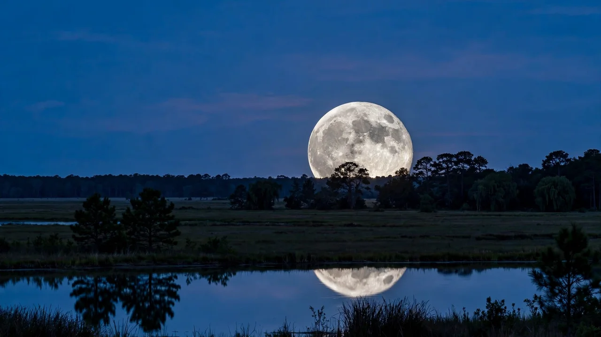
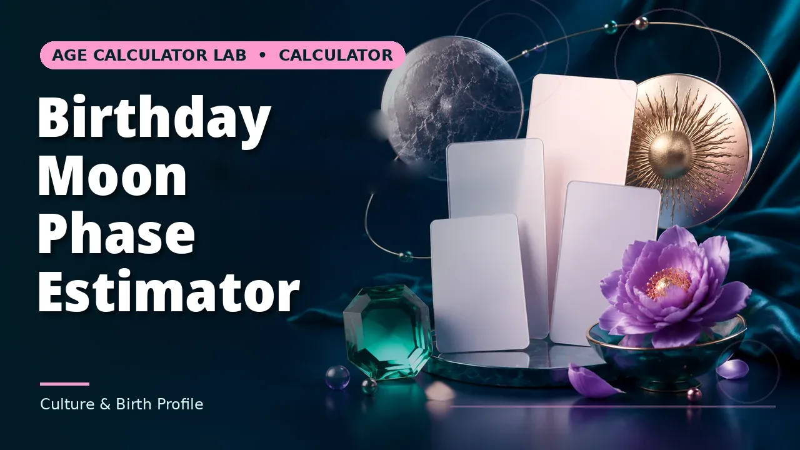
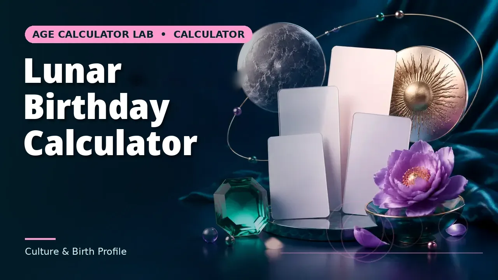

Quick answer
The Moon’s phases repeat every 29.530588853 days (the synodic month). The phase on any date is the age of the Moon — days since the last new Moon — divided by that cycle. 0 days is new, about 7.4 days is first quarter, about 14.8 days is full, about 22.1 days is last quarter.
The cycle: eight phases
The Moon orbits the Earth, and the phase we see is the fraction of the sunlit half that faces us. At new Moon the Moon sits between Earth and Sun and its dark side faces us. As it moves, more of the lit half turns toward us: waxing crescent, first quarter (half lit, growing), waxing gibbous, full Moon (the whole lit half facing us), then waning gibbous, last quarter (half lit, shrinking), waning crescent, and back to new.
“Waxing” means growing, “waning” means shrinking; “gibbous” means more than half lit but not full. A first-quarter Moon is half lit and growing; a last-quarter Moon is half lit and shrinking. The two quarters look similar in a photograph and opposite in the sky: the first quarter’s lit half faces west, the last quarter’s faces east.
Why 29.53 days, not a month — and not 27.3
The Moon orbits the Earth in 27.3 days relative to the stars (the sidereal month). But the phase cycle — the synodic month — is 29.53 days, because the Moon must return to the same position relative to the Sun, and the Earth moves around the Sun while the Moon orbits. The Moon needs about two extra days to catch up.
That 29.53-day cycle is why full Moons drift about 11 days earlier each year against the calendar, and why some years have 13 full Moons instead of 12.
Moon age and illumination
“Moon age” is the number of days since the last new Moon. It is the single number from which the phase and the illumination both follow: age 0 is new (0% lit), age 7.4 is first quarter (50% lit), age 14.8 is full (100% lit), age 22.1 is last quarter (50% lit), and the cycle closes at 29.53.
The illumination formula used here — (1 − cos(2π × age ÷ 29.53)) ÷ 2 — is an approximation: it assumes a circular orbit and a uniform cycle, which is why published figures carry about half a day of uncertainty. For planning a night of stargazing or a photograph, that uncertainty does not matter; for an exact eclipse prediction, it does.
Worked examples
20 October 2026: Moon age 8.62 days, first quarter, about 63% lit. The previous new Moon was 11 October 2026, the next full Moon 26 October 2026, the next new Moon 10 November 2026. 7 January 2000: Moon age 0.24 days, just past the reference new Moon of 6 January 2000. 26 October 2026: Moon age 14.62 days, full Moon — matching the published Hunter’s Moon date.

Seeing the phases: when to look
A waxing Moon is visible in the afternoon and evening; a waning Moon is visible late at night and in the morning. The first quarter Moon is highest at sunset, the full Moon rises at sunset and sets at sunrise, and the last quarter Moon is highest at sunrise. Knowing the phase therefore tells you when to look, not just what you will see.
The Moon looks largest near the horizon, but that is an illusion: it is the same angular size as when overhead. What is real is the colour — low Moons look orange because their light passes through more atmosphere.
Supermoon, micromoon and blue Moon
A supermoon is a full Moon near perigee, the Moon’s closest approach to Earth — it looks slightly larger and brighter than an average full Moon. A micromoon is the opposite: a full Moon near apogee, the farthest point. A blue Moon is the extra full Moon: traditionally the third full Moon in a season with four, in modern usage the second full Moon in a calendar month. None of these changes the phase calculation; they describe where the Moon is in its distance cycle and in the calendar.
Common mistakes to avoid
Calling the first quarter a “half Moon” as if it were a separate phase (it is the phase’s name for 50% lit and growing); expecting the cycle to fit a calendar month (it is 29.53 days, so full Moons drift about 11 days earlier each year); confusing the Moon’s age with its distance (the Moon is closest at perigee, which is a different cycle); and expecting a named Moon — Pink, Strawberry, Hunter’s — to look the colour or object of its name (the names describe the season).
Related calculators
Use the Moon Age Calculator for any date’s phase, and the birthday tools for the phase on a birth date.



Frequently asked questions
How long is the Moon’s cycle?
29.530588853 days — the synodic month, from one new Moon to the next.
What is Moon age?
The number of days since the last new Moon. Age 0 is new, about 7.4 days is first quarter, about 14.8 days is full, about 22.1 days is last quarter.
Why is the cycle 29.53 days and not 27.3?
27.3 days is the sidereal orbit relative to the stars. The phase cycle needs about two extra days because the Earth moves around the Sun while the Moon orbits.
How accurate is the phase calculation?
About half a day, because the calculation assumes a circular orbit and a uniform cycle. Good for planning; not for exact eclipse prediction.
What is a gibbous Moon?
A Moon more than half lit but not full — waxing gibbous while growing toward full, waning gibbous while shrinking after it.
When is a waxing Moon visible?
In the afternoon and evening. A waning Moon is visible late at night and in the morning.
What is a supermoon?
A full Moon near perigee, the Moon’s closest approach — slightly larger and brighter than average. The opposite is a micromoon.
What is a blue Moon?
Traditionally the third full Moon in a season with four; in modern usage, the second full Moon in a calendar month.
What phase was the Moon on 20 October 2026?
Age 8.62 days, first quarter, about 63% lit.
Why does a low Moon look orange?
Its light passes through more atmosphere near the horizon. The large size near the horizon is an illusion.